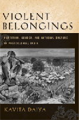

How the Partition of India set in motion the violence, ethnic divisions, and dislocations that continue into our own time
How the Partition of India set in motion the violence, ethnic divisions, and dislocations that continue into our own time


 How the Partition of India set in motion the violence, ethnic divisions, and dislocations that continue into our own time
How the Partition of India set in motion the violence, ethnic divisions, and dislocations that continue into our own time

|  |
Violent BelongingsPartition, Gender, and National Culture in Postcolonial IndiaKavita Daiyapaper EAN: 978-1-59213-744-2 (ISBN: 159213744X) |
"Daiya has argued persuasively and perceptively for the combination of literary and cinematic texts, deftly combining these with social history and journalism to produce informed, contextualized readings of the cultural moment. Engagingly written, covering a longish (fifty-year) history of literary and film texts with surprising contextual detail, Violent Belongings embraces a dauntingly sophisticated theoretical repertoire which Daiya handles with confidence, tact, and common sense."
—Henry Schwarz, Georgetown University
The 1947 Partition of India resulted in the death of two million people and the displacement of sixteen million more. It continues to haunt contemporary life in India�not only for discourses that debate the place of religion in India, but also for the historical interpretation of justice and minority belonging, and for the tension-ridden struggle over the production of secular national culture in the subcontinent.
Violent Belongings is about the relation between culture and violence in the modern world, exploring contemporary ethnic and gendered violence, and the questions about belonging that trouble nations and nationalisms today. Kavita Daiya examines South Asian ethnic violence and related mass migration in and after 1947 through its representation in postcolonial Indian and, more broadly, global South Asian literature and culture. By investigating such texts as Khushwant Singh�s Train to Pakistan with Salman Rushdie�s Shalimar the Clown and Jhumpa Lahiri�s The Interpreter of Maladies, alongside the writings of Mahatma Gandhi, Bollywood cinema and diasporic films like Deepa Mehta�s Earth, Daiya illuminates the cultural and political negotiation of postcolonial migration, nationality and violence in transnational public spheres.
Excerpt available at www.temple.edu/tempress
"Violent Belongings is a nuanced and historicized study of the contentious afterlife of the Partition in the cultural politics of the subcontinent and its diaspora. Daiya deftly illuminates how quotidian categories such as citizenship, belonging and community are profoundly inflected by the narrative legacies of the stained dawn of 1947."
—Priyamvada Gopal, University of Cambridge, and author of Literary Radicalism in India
"Daiya�s study of the Partition, within the parameters that she defines, is valuable for the light it sheds on a significant moment of subcontinental history that has important repercussions for the geopolitics of today. Violent Belongings provides a significant intervention in U.S. ethnic studies and South Asia area studies by showing how even the most localized traumas can have far-reaching impact. The discussion of film and literature is rich and thought-provoking, and the moment is ripe for an enlarging of national histories to consider their implications on a global stage."
—Rajini Srikanth, University of Massachusetts, Boston, and author of The World Next Door: South Asian American Literature and the Idea of America
"[Daiya's] analysis takes up varied representations of gendered violence in Bollywood and popular fiction, then carries the analysis of gendered national identity into the diaspora and refugee displacement in the postcolonial public sphere. Summing Up: Recommended."
—Choice
"Kavita Daiya�s book, Violent Belongings, belongs to that rather nebulous genre of culture studies, for which her genealogy, Chicago and Homi Bhabha, seems impeccable. Her methodology is fashionably postcolonial, that is, it is suitably eclectic, employing textual strategies ranging from reading against the grain to deconstruction to more conventional narration of the storyline. She flits from text to text, taking up fiction at times, and journalism and cinema at others. Perhaps it is in this multiplicity of texts that the strength of her work lies—most critics would either examine literature or cinema.... The book is distinguished by its focus on cinema, along with literature."
—The Journal of Intercultural Studies
"Daiya's expert discussion serves as a necessary reminder that violence of this magnitude does not simply cease or stay put, but travels through time and space. After reading this essential text, it will be impossible to discuss Partition as if its legacy was contained within the borders it created."
—South Asian Review
"The strength of the book is that even while it demonstrates a historical relationship between Partition and contemporary narratives, it simultaneously emphasizes the 'diverse and discontinuous' mapping of these narratives.... the book is a wonderful resource for postcolonial scholars, but also for anybody who wants a clear-eyed, lucid and insightful understanding of this seminal historical moment."
—The Journal of Postcolonial Writing
"Violent Belongings dexterously combines history, theory, ideology and practice making it one of the most exhaustive and brilliant works, written on Partition, gender and nation."
—Deep Focus Cinema
Visit the author's website: www.1947Partition.org.
Acknowledgements
1. Train to Pakistan 2007: Decolonization, Partition, and Identity in the Transnational Public Sphere
2. Re-Gendering the Nation: Masculinity, Romance, and Secular Citizenship
3. "A Crisis Made Flesh": Women, Honor, and National Coupledom
4. "We Were Never Refugees": Migrants nad Citizens in the Postcolonial State
5. War and Peace: Pakistan and Ethnic Citizenship in Bollywood Cinema
6. Provincializing the Nation: State Violence and Transnational Belongings in the Diaspora
Conclusion
Notes
Bibliography
Index
 | Kavita Daiya is Associate Professor of English at the George Washington University in Washington, DC. |
Asian Studies
Gender Studies
Race and Ethnicity
© 2015 Temple University. All Rights Reserved. This page: http://www.temple.edu/tempress/titles/1958_reg.html.